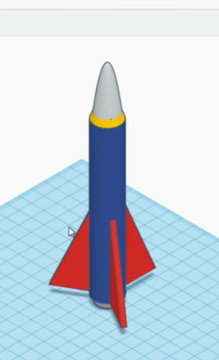
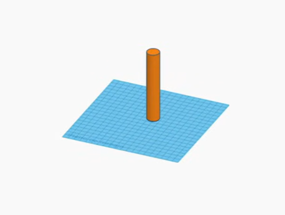
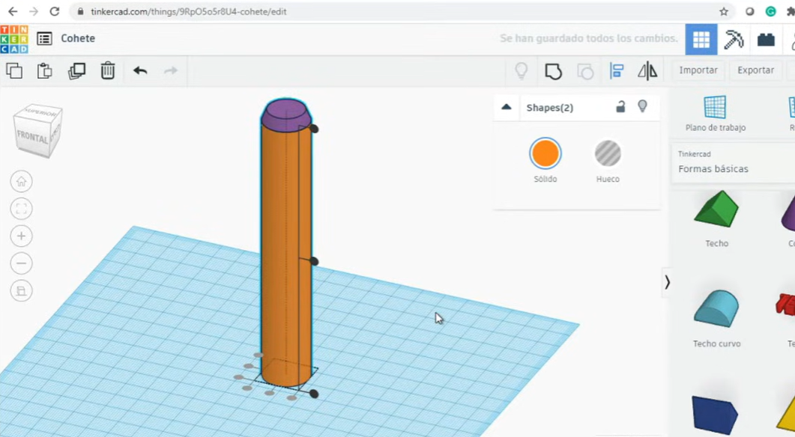
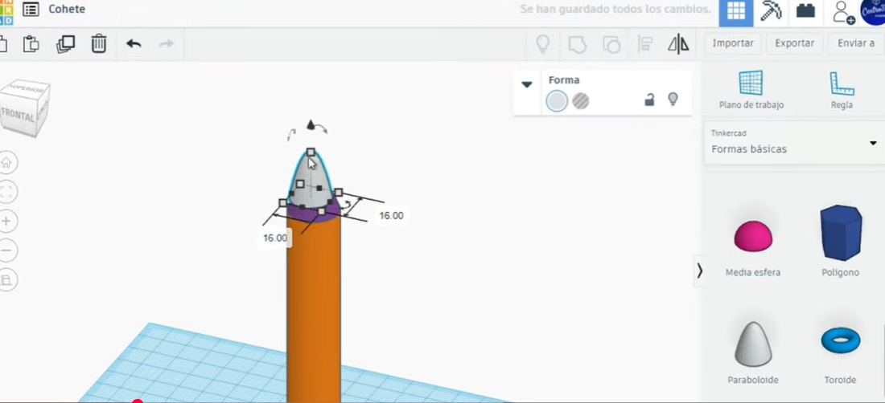
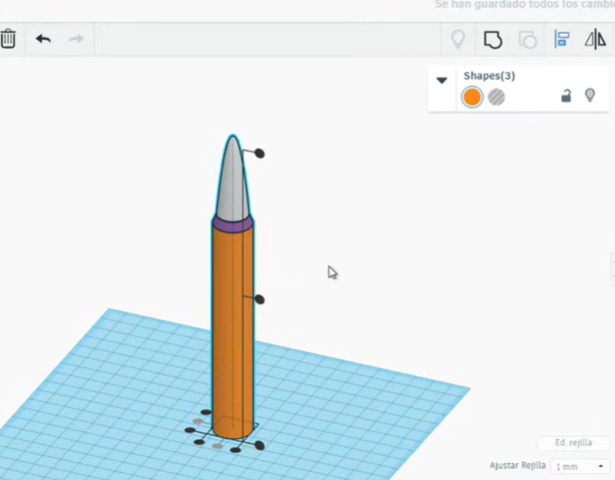
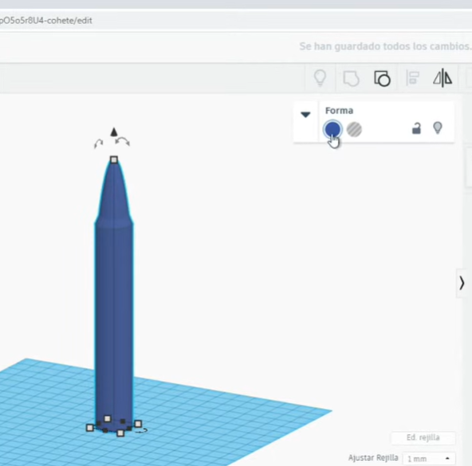
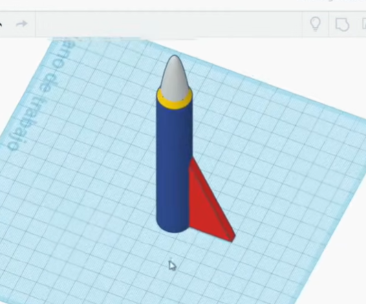
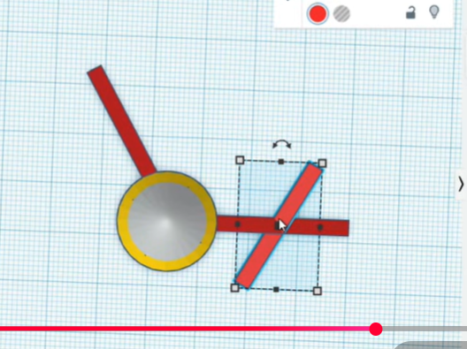
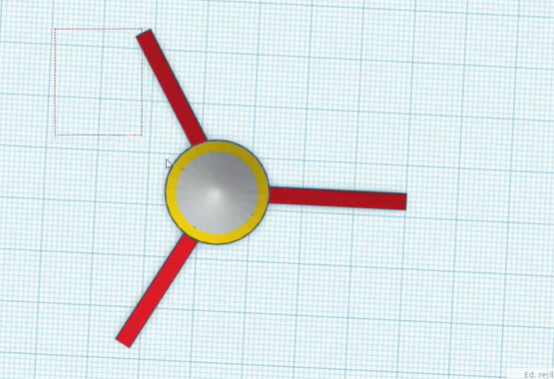
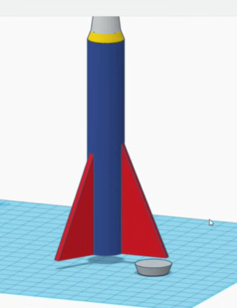

Objetivo: Aprender a usar formas básicas, herramientas de alineación y agrupación para diseñar un modelo 3D de un cohete.

Añadir el Cilindro: En el panel derecho, dentro de "Formas básicas", selecciona un Cilindro y arrástralo al plano de trabajo.

Suavizar el Cilindro: Con el cilindro seleccionado, aparecerá un menú de propiedades. Aumenta el control deslizante de "Lados" hasta 64 para que la superficie sea más lisa.
Ajustar la Altura: Haz clic en el pequeño cuadrado blanco en la parte superior del cilindro. Escribe 120 y presiona Enter para darle al cohete una altura de 120 mm.
La punta se construirá en tres partes: una sección de transición y la ojiva.
En el menú de la derecha, selecciona la herramienta "Plano de trabajo" y haz clic en la cara superior del cilindro.
Arrastra un Cono desde las "Formas básicas" y colócalo sobre el nuevo plano de trabajo.

Haz clic nuevamente en la herramienta "Plano de trabajo" y luego en una parte vacía del plano principal para volver a la normalidad.
Selecciona el cono y ajusta sus propiedades: Radio Base: 10, Radio Superior: 8, Altura: 5. Cambia el color de esta pieza a amarillo.
Nuevamente, usa la herramienta "Plano de trabajo" y colócala sobre la pieza de transición amarilla.
Busca y arrastra una forma de Paraboloide al nuevo plano.

Regresa al plano de trabajo original. Ajusta el tamaño del paraboloide a 16 x 16 mm en su base y dale una altura que te guste (por ejemplo, 30 mm). Cambia el color de la ojiva a blanco.

Mantén presionada la tecla Shift y selecciona las tres partes del cohete: el cuerpo, la transición y la ojiva. Haz clic en el botón "Alinear" y céntralos en los dos ejes horizontales.
Cambia el color del cuerpo principal (el cilindro) a azul.

Arrastra una forma de Cuña al plano de trabajo. Gírala 90 grados para que quede en posición vertical.
Ajusta sus dimensiones: Altura: 50 mm, Grosor: 3 mm. Cambia su color a rojo.

Mueve la aleta hasta que toque la parte inferior del cuerpo del cohete. Para una alineación precisa, selecciona el cohete y la aleta, haz clic en "Alinear" y alinéalos en el centro de uno de los ejes.
Selecciona solo la aleta. Haz clic en el botón "Duplicar y repetir" (o presiona Ctrl+D).
Sin hacer clic en ningún otro lugar, utiliza las flechas de rotación para girar la aleta duplicada 120 grados.

Vuelve a presionar "Duplicar y repetir" una vez más. Tinkercad recordará la rotación y creará la tercera aleta automáticamente a 120 grados de la segunda.

Selecciona todas las partes del cohete y muévelo hacia arriba unos 5 mm desde el plano de trabajo.
Arrastra un Cono al plano de trabajo. Ajusta sus propiedades: Radio Superior: 10, Radio Base: 8, Altura: 5. Cambia su color a gris.

Selecciona todos los componentes (el cuerpo del cohete con sus aletas y la nueva base). Usa la herramienta "Alinear" para centrar todo perfectamente en los ejes horizontales.
Con todo seleccionado, haz clic en el botón "Agrupar". Para que el cohete no se vuelva de un solo color, haz clic en la opción "Color" y activa la casilla "Multicolor".
Has completado el diseño de tu cohete en Tinkercad.